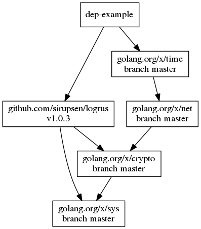

dep
managing Golang's vendor dependencies

History of deps mgmt in Go
* `go get` * The Go standard installation has a single source tree (`~/go/src/...`) * `GO15VENDOREXPERIMENT=1`, compiler looks for deps in `./vendor` * [List of Package Management Tools](https://github.com/golang/go/wiki/PackageManagementTools) grew: Govendor, gv, gvt, govend, Glide, ...Workspace in Go
$GOPATH/
bin/ # compiled binaries
pkg/ # compiled packages
src/ # sources
github.com/golang/example/
.git/
hello/
hello.go
...
vendored project layout
$GOPATH ...
./projectA/ # my project under $GOPATH
.git/ # I am using a git-repo per project
http/
handler.go
main.go
vendor/ # and GO15VENDOREXPERIMENT
github.com/apache/thrift/ # (which is default by now)
... many files
golang.org/x/time/
... many more files
managing ./vendor manually is total
torture!
(go get, cp, git submodules, ...)
using dep
installing dep
go get -u github.com/golang/dep/cmd/dep
getting started
# decouple your project from the $GOPATH
# ALL dependencies will be vendored
$ dep init -v # always add the -v flag
# add a package before using it in code
$ dep ensure -add golang.org/x/time/rate
# enjoy the fruit of your work
$ dep status -v
dep creates the Gopkg.lock
and Gopkg.toml (called the Manifest) files

common actions
# whenever you don't know what to do
$ dep ensure -v
# see my dependency status / updates
$ dep status
# if you care about the git repo size
$ dep prune
# test if the Gopkg.toml file is still good
$ rm -rf ./vendor
$ dep ensure -v
$ ... build project
visualizing
You can even visualize the dependency tree, if you need to show off
# sudo apt install graphviz
$ dep status -dot | dot -T png | display
, but they look like this for proper projects
{kind=link}
Manifest: Gopkg.toml
Syntax Elements
| required | use for tools, not directly or transitively required from code |
| ignored | things you do not want to install (private dependencies) |
| metadata | ignored by dep, can be used by other tools |
| constraint | direct dependency, either branch, version or revision |
| override | Don't use! last resort to override a package in all dependency graphs |
| version | property of "constraint" |
| name | name of a package |
version
If you need to specify a specific version check https://github.com/Masterminds/semver for details about the comparison operators, you can go very fany there!
`=` `!=` `>`
`<` `>=` `<=`
`-` `~` `^`
`[xX*]`
^ (major range) is default, so:
1.2.3 becomes `>=1.2.3, <2.0.0`
0.2.3 becomes `>=0.2.3, <0.3.0`
0.0.3 becomes `>=0.0.3, <0.1.0`
Example
[[constraint]]
name = "github.com/BurntSushi/toml"
version = "0.3.0" # is ^0.3.0
[[constraint]]
branch = "master"
name = "github.com/afex/hystrix-go"
[[constraint]]
name = "github.com/apache/thrift"
branch = "master"
source = "git.apache.org/thrift.git"
[[constraint]]
name = "github.com/PuerkitoBio/purell"
version = "1.1.0"
...
more topics
Docker
use this recipe in docker if vendor is not checked in
FROM golang:1.9 AS builder
RUN curl -fsSL -o /usr/local/bin/dep \
https://github.com/golang/dep/releases/download/vX.X.X/dep-linux-amd64 && \
chmod +x /usr/local/bin/dep
RUN mkdir -p /go/src/github.com/***
WORKDIR /go/src/github.com/***
COPY Gopkg.toml Gopkg.lock ./
# copies the Gopkg.toml and Gopkg.lock to WORKDIR
RUN dep ensure -vendor-only
# install the dependencies without checking for go code
...